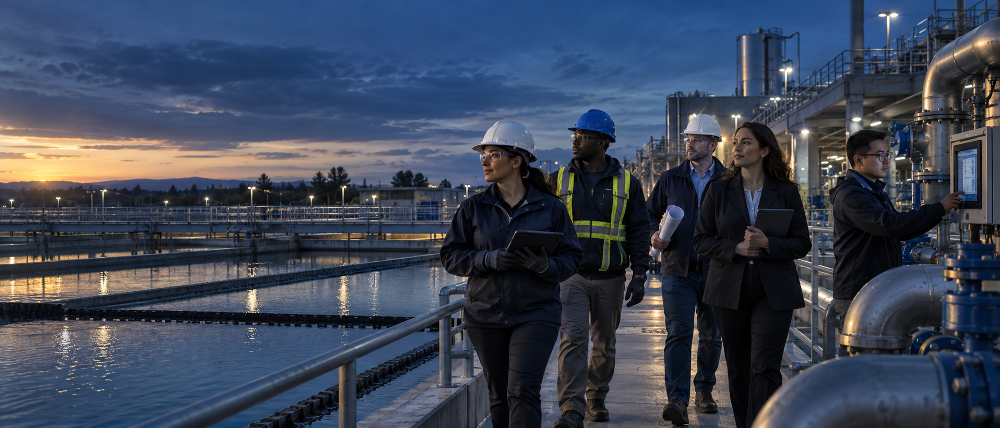

Strategy &
Advisory
Turning infrastructure priorities into practical road maps, decisions and coordinated action.

A WETWORK GROUP MOVEMENT
Wetwork helps utilities move infrastructure forward—and brings clients, partners and industry leaders together around the work it takes to make progress real.

NOT A CAMPAIGN. A COMMITMENT.
Infrastructure becomes stronger when experience is shared, data becomes direction, technology serves people and every voice is connected to the outcome.
Built by WE is our belief that the future of infrastructure belongs to those willing to build it together.
Wetwork sits where strategy, operations, technology and delivery meet. We help utilities bring the right people and capabilities around complex infrastructure challenges.
Turning infrastructure priorities into practical road maps, decisions and coordinated action.
Representing utility interests and helping programs move from planning through implementation.
Strengthening daily performance, reliability, safety and service across water infrastructure.
Connecting data, platforms and field systems to the operational outcomes utilities need.
Building field capacity, transferring knowledge and supporting the people who keep systems moving.
WE describes how the work becomes stronger—with our clients, partners, operators and communities at the table.
WE begins with Wetwork and grows through every client, partner, operator, innovator and community that joins us in building better infrastructure outcomes.
WE describes how the work becomes stronger—with our clients, partners, operators and communities at the table.
“Clients and utility leaders are WE.
Modern infrastructure is not transformed by technology alone. It moves forward when better visibility strengthens every decision that follows.
Understand the whole system.
Turn information into direction.
Move the right people and resources.
Improve reliability and outcomes.
Build strength that lasts.
THE MOVEMENT IN FOUR WORDS
Different roles. Different perspectives. One shared responsibility to leave infrastructure stronger than we found it.
Clients and partners are not standing outside the Wetwork story. They are part of WE. Choose the role you carry and share the commitment to build infrastructure forward—together.
BUILT BY WE.
Wetwork is the infrastructure advisor, operator, integrator and convener behind the platform. Our services are what we deliver. Built by WE is how we invite clients and partners to help shape—and share ownership in—the progress we create together.
Start a conversation ↗